SMART BUKATSU / START GUIDE
はじめての
操作ガイド
招待から、連絡・予定・動画の活用まで。
スマートフォンを操作しながら、ひとつずつ進めましょう。
自分に合う読み方を選んでください
チームを導入・管理する方
導入チェックリストから始め、01〜06を順に進めます。設定後は、参加者側でも確認します。
招待された部員・保護者の方
初めて参加する手順→カレンダー・全体連絡→動画閲覧の順に読みます。戦術ノートは保護者には表示されません。
招待を1人、予定と連絡を各1件、動画の場面を1つ。少ない量で操作と見え方を確認してから、チーム全体へ広げます。
実画面追加：2026年10月22日 / 対象：アプリ1.1.3の現行ソース。掲載画像はAndroid開発版を練習用データで撮影したものです。赤枠・番号で押す場所を示しています。iOSや配布版では表示が異なる場合があります。
GET READY
始める前の準備とチェックリスト
この資料では、チーム名が表示され、連絡のタブが並ぶ画面を「ホーム」と呼びます。所属チームが複数ある方は、操作するチーム名を先に確認してください。
カレンダー・動画・戦術ノートはホーム上部の横並びのメニューにあります。見当たらないときは横にスクロールします。表示は役割により異なります。
用意するもの
- アプリを利用できるスマートフォンとインターネット接続。
- 確認メールを受け取れるメールアドレス。招待される方はチームの招待コード。
- 動画を試す場合は、参加者が再生できる動画URLと、短い練習用の映像。
管理者の導入チェック
- 自分のメール確認を終え、正しいチームのホームを開いた。
- 確認に協力するメンバー1人を招待し、参加を確認した。
- メンバーの役割・学年やグループ・必要な個別権限を設定した。
- 共有予定を1件登録し、相手の端末でも表示された。
- 全体連絡の公開範囲と通知先を確認し、テスト連絡を投稿した。
- 相手がプッシュ通知設定を確認し、連絡を開けた。
- 動画のタグを1件記録・公開し、動画閲覧で再生できた。
- 戦術ノートを1件投稿し、確認対象者が確認・質問を試した。
役割・共有範囲は管理する方が設定します。メール確認と自分の端末の通知許可は、各自が行います。相手に届くかの確認は、投稿した本人とは別のアカウントで行ってください。
目次・必要なページを開く
| 01 招待・参加・権限：p.3-6 | 02 スケジュール：p.7-10 |
| 03 全体連絡・通知：p.11-14 | 04 動画登録・切り抜き：p.15-20 |
| 05 動画閲覧：p.21-24 | 06 戦術ノート：p.25-30 |
| 困ったときのQ＆A：p.31-34 | 講習の課題：p.35 ／ 用語：p.36 |
01 / MEMBERS
メンバーを招待して参加する
招待する方の操作
共有画面で送信先を選びます。招待文にはアプリ取得・参加リンク、招待コード、2段階の手順が自動で入ります。「招待文をコピー」や従来の「招待コードをコピー」も使えます。相手が参加すると、部員リストに自動で追加されます。
初めて参加する方の操作
- ① 招待文の取得リンクからアプリを入れます
案内ページでGoogle PlayまたはApp Storeを選びます。すでにアプリをお持ちの方は②へ進めます。
- ② 元の招待文に戻り、参加リンクを押します
招待コードが入力された部員登録画面が開きます。Androidで取得時のコードが引き継がれた場合は、そのまま登録できます。iPhoneは取得後に参加リンクをもう一度押してください。案内ページの「アプリを開いて参加する」も使えます。初めての方は表示名を入力します。スタッフ・保護者も部員として登録し、参加後に管理者が役割を変更します。
- メールアドレス・パスワードを入力し、登録します
パスワードは6文字以上です。表示された年齢・同意条件、利用規約、プライバシーポリシーを確認し、「登録して始める」を押します。
- 確認メールのリンクを開き、アプリに戻ります
登録したメールを確認し、リンクを開きます。その後アプリへ戻り、「確認状態を再取得」を押します。メール確認が終わるまでは主要機能を利用できません。
- 所属チームと表示名を確認します
チーム選択が表示されたら、参加したチームを選びます。管理者へ参加できたことと希望する役割を伝えます。
参加リンクを開き、「ログイン」で入るとコードがチーム参加へ引き継がれます。「参加する」を押して確定してください。同じメールアドレスで新規登録を繰り返す必要はありません。リンクで開けない場合はアプリを更新し、LINE内なら外部ブラウザで開いてください。招待文のコードをコピーし、新規登録またはホーム上部のチーム名→「招待コードで参加」へ手入力する方法も使えます。
次は管理者が 役割と必要な権限を設定します。
実画面 / ANDROID
招待する場所・参加する場所
Android開発版・練習用データ（2026年10月22日撮影）。赤枠と番号は押す場所の目印です。番号は各画像内で対応します。画像を押すと拡大できます。
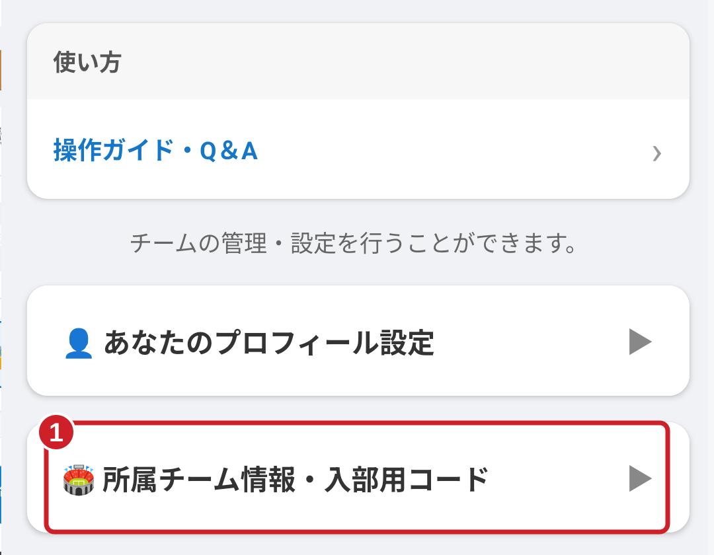
- 「所属チーム情報・入部用コード」を開きます。開いた先の「招待コードをコピー」を使います。コードそのものは掲載していません。
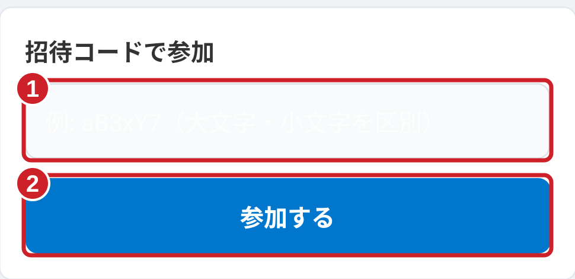
- 招待コードの入力欄です。画像は未入力の状態です。
- コードを入力した後に「参加する」を押します。新規登録する方は本文の手順を使います。
01 / PERMISSIONS
役割と、個別に許可する操作を設定する
- 対象メンバーの名前を見つけます
名前の横の現在の役割（「一般部員」など）を押し、変更する役割を選びます。監督・管理者への変更は、チーム作成者などの条件により選択肢が異なります。
- 一般部員・キャプテンの所属を整えます
「学年・グループ」を押して必要な項目を選び、「学年・グループを保存」を押します。候補がなければ「学年・グループ管理」で先に登録します。スタッフへ相談する部員には「担当」も設定します。
- 一般部員・保護者には、必要な個別権限を設定します
「動画追加」「タグ編集」はそれぞれ別の許可です。一般部員には「カレンダー編集」「戦術ノート投稿」も設定できます。各項目を押し、ON/OFFの表示を確認します。
- 本人の画面で使えるかを確認します
本人に対象画面を開き直してもらい、必要なボタンが表示されるか確認します。保護者は必要に応じて「子供」も設定し、「子供の設定を保存」で確定します。
| 役割 | 主な操作・確認点 |
|---|---|
| 監督・管理者・スタッフ | メンバー管理、共有予定・動画・戦術ノートの作成。スタッフの記録閲覧には「全体／担当のみ」の設定もあります。 |
| キャプテン | 共有予定・動画・戦術ノートの作成、閲覧専用タブへの投稿。連絡タブの公開範囲設定は管理側へ依頼します。 |
| 一般部員 | 公開された内容の閲覧。予定編集・動画追加・タグ編集・戦術ノート投稿は個別許可で利用します。 |
| 保護者 | 公開対象となる連絡、予定、動画の閲覧。動画追加・タグ編集は個別許可で利用。戦術ノートは対象外です。 |
「スタッフ」は管理操作ができる役割です。動画追加だけを任せたい場合などは、その人の役割と個別権限を分けて検討してください。
次は 02 スケジュールを作る
実画面 / ANDROID
一般部員の役割・個別権限
Android開発版・練習用データ（2026年10月22日撮影）。赤枠と番号は押す場所の目印です。番号は各画像内で対応します。画像を押すと拡大できます。
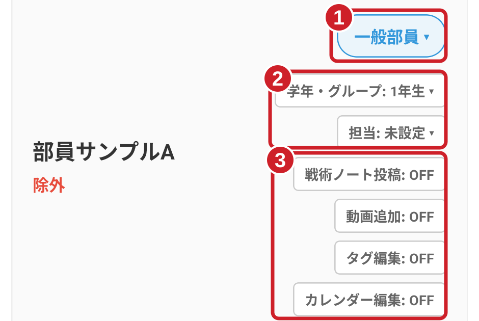
- 現在の役割を押して変更します。
- 学年・グループと担当を設定します。
- 動画追加・タグ編集・カレンダー編集・戦術ノート投稿は個別の許可です。必要な項目を押してON/OFFを確認します。
02 / CALENDAR
チームで共有する予定を1件作る
「個人の予定（非公開）」に登録した内容は、チームの共有予定にはなりません。練習・試合の連絡は、共有の欄から登録します。
- カレンダーで予定日を押します
最初は1日分の練習予定で試します。日付を選んだ後、「部活の予定（共有）」の右側にある「＋ 追加」を押します。
- 予定の種類を選びます
「新しい予定を追加」で「練習」「試合」「その他」から選びます。日程は「当日のみ」のまま進めます。
- 開始・終了時刻と説明を入れます
時刻を押して変更します。「詳細説明・備考」には集合時間や持ち物などを入力します。
入力例
種類：練習 / 時間：16:00〜18:00
備考：15:50に体育館入口集合。飲み物と室内シューズを持参。 - 画面下の「保存する」を押します
入力欄に隠れている場合は、キーボードを閉じて画面を下へスクロールします。保存後、同じ日の共有欄に予定があるか確認します。
- 別のメンバーにも同じ日付を開いてもらいます
予定の種類、開始・終了時刻、備考が意図した内容か確認します。「保存できた」と「相手が見られた」の両方を確認して完了です。
続けて 複数日・添付・編集の操作を確認できます。
実画面 / ANDROID
共有予定の入口と入力欄
Android開発版・練習用データ（2026年10月22日撮影）。赤枠と番号は押す場所の目印です。番号は各画像内で対応します。画像を押すと拡大できます。
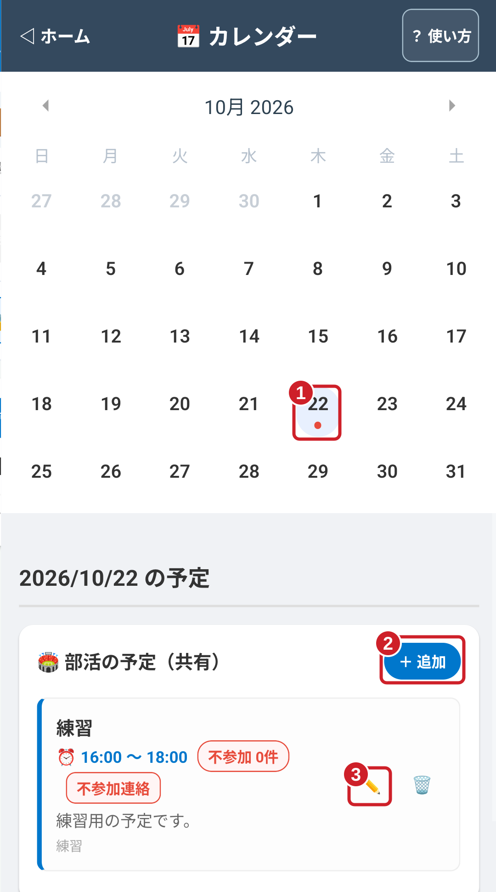
- 予定日を選びます。
- 「部活の予定（共有）」の「＋ 追加」を押します。
- 登録後の変更は予定カードの鉛筆から開きます。
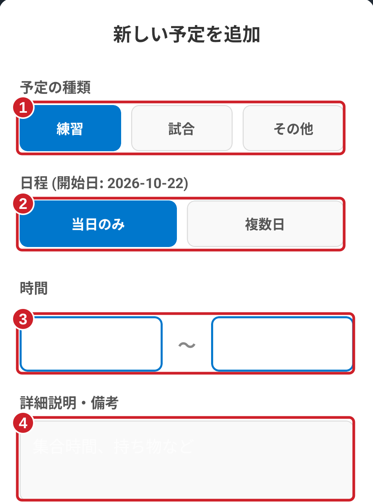
- 予定の種類を選びます。
- 1日なら「当日のみ」、複数日なら「複数日」を選びます。
- 開始と終了の時刻欄をそれぞれ押します。
- 集合時間や持ち物を「詳細説明・備考」に入力します。
02 / CALENDAR OPTIONS
複数日・添付資料・予定の変更
同じ時間の予定を複数日に入れる
- 予定の登録画面で「複数日」を選びます
表示されたカレンダーで登録したい日を押します。選択中の日付を確認し、不要な日はもう一度押して外します。
- 共通の時刻を設定して保存します
選択した各日に、同じ時間設定で保存されます。毎週繰り返す自動登録とは異なるため、登録したい日を選択してください。
写真・PDF・場所を追加する
- 「写真・PDF添付」の「写真を追加」「PDFを追加」から選びます。複数日の場合は、添付対象の日付も確認します。合計3ファイル、各10MBまでです。
- 添付の選択後は、予定の「保存する」で確定します。添付資料はアップロードから3か月後に自動削除されます。後からも必要な原本は別に保管してください。
- 「場所」には施設名・住所・集合場所名を入力します。地図を使うときは「場所詳細機能」をONにし、「座標を取得」「地図でピンを調整」で位置を確認します。
登録済みの予定を変更する
対象日を選び、予定カードの鉛筆マーク（✏️）を押すと「予定の編集」が開きます。内容を変更し「保存する」を押します。複数日に登録した予定も、編集する日はカレンダーで先に選びます。変更後、その日の予定を確認してください。
予定の変更通知には、チームの設定に応じた「直近の日数」の条件があります。先の日程を登録した直後に通知が来ない場合も、まずカレンダーで保存結果を確認してください。受信側の通知設定では「予定の作成・変更」を確認します。
この章の完了チェック
- 共有欄に予定が表示され、参加者も内容を確認できた。
- 添付した場合は、保存後に写真・PDFを開けた。
- 変更後の日時・集合場所を参加者側でも確認した。
次は 03 全体連絡と公開範囲
実画面 / ANDROID
添付・場所・保存ボタン
Android開発版・練習用データ（2026年10月22日撮影）。赤枠と番号は押す場所の目印です。番号は各画像内で対応します。画像を押すと拡大できます。
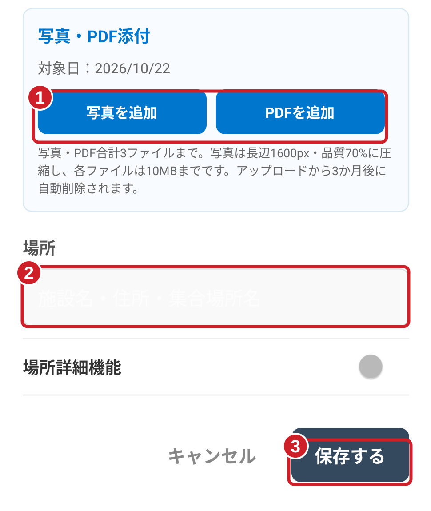
- 必要なら写真・PDFを添付します。個人の写真一覧は掲載していません。
- 場所を入力します。
- 画面下へスクロールし「保存する」を押します。
03 / COMMUNICATION
全体連絡の「見られる人」を設定する
ホームの「全体連絡」などのタブを、この資料では「連絡タブ」と呼びます。アプリの設定画面では「チャンネル」と表示される箇所もあります。
- 設定したいタブを長押しします
短く押すとタブの切り替え、指を置いたまま押すと設定を開きます。新しい連絡先のまとまりを作る場合は、タブ横の「＋ 追加」を押します。
- 投稿できる人を決めます
「部員は閲覧のみ（投稿不可）」をONにすると、一般部員・保護者は新規投稿できません。監督・管理者・スタッフ・キャプテンは投稿できます。
- 「共有範囲」を確認します
「スタッフ」「部員」「保護者」から対象を選びます。この画面の「スタッフ」には、監督・管理者も含まれます。保護者へ見せる場合は「保護者」をONにします。
- 部員全体か、学年・グループかを選びます
「部員全体」は学年・グループ未設定の部員も対象です。「学年・グループごと」は、選んだいずれかの学年・グループに所属する部員・キャプテンが対象です。
- 続いて、管理側の通知先を設定します
同じ画面の下にある「管理者・スタッフの通知先」を設定してから保存します。操作は次のページで説明します。
保護者は新規作成時にはOFFです。タブ名だけで全員に見えると判断せず、共有範囲を確認してください。公開範囲を変更すると、そのタブの過去の投稿の見え方にも関係するため、既存の内容も確認します。
次は 通知先の設定とテスト投稿
実画面 / ANDROID
全体連絡の長押しと共有範囲
Android開発版・練習用データ（2026年10月22日撮影）。赤枠と番号は押す場所の目印です。番号は各画像内で対応します。画像を押すと拡大できます。
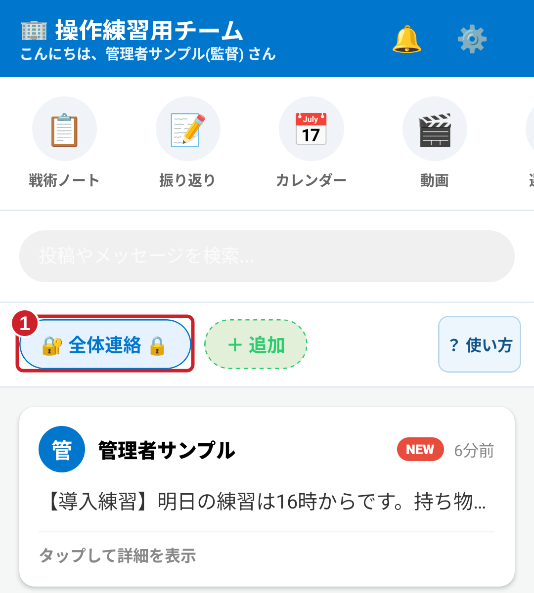
- 「全体連絡」に指を置いたまま長押しすると、次の設定画面が開きます。
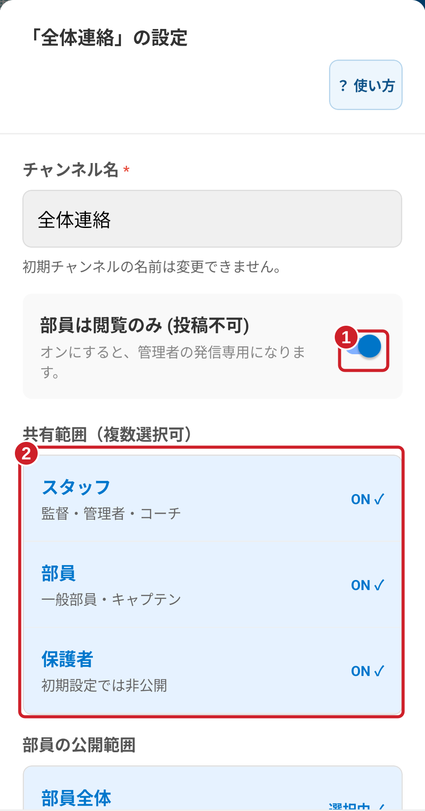
- 「部員は閲覧のみ（投稿不可）」で投稿できる人を設定します。
- スタッフ・部員・保護者の共有範囲を選びます。画像は操作例で、各チームの初期状態とは異なる場合があります。
03 / NOTIFICATIONS
知らせる相手を選び、受信を確認する
- 管理者・スタッフの通知先を選び、保存します
連絡タブの設定で「管理者・スタッフの通知先（複数選択可）」をONにします。共有範囲の「スタッフ」もONにし、「保存する」で確定します。新しいタブの場合は「作成する」を押します。
- 参加者が自分の通知設定を確認します
ホームの歯車→「プッシュ通知」→「通知設定を開く」へ進みます。全体の「プッシュ通知」、通知する項目の「チャンネルの新規投稿」、対象チームをONにします。端末の通知許可も確認します。
- 「全体連絡」を開いてテスト投稿します
ホームでタブを選び、下の入力欄に本文を入力して「投稿」を押します。入力欄がない場合は、投稿できる役割か確認します。
投稿例
【導入テスト】明日の練習は16時からです。この連絡を開けるか確認をお願いします。 - 投稿者以外の端末で確認します
公開対象の部員・キャプテン・保護者と、通知先に選んだ管理側の人に確認してもらいます。投稿者本人には新規投稿の通知は届きません。ホーム上部のベルから通知センターも確認します。
①正しいチーム・連絡タブか → ②公開対象か → ③管理側の人は通知先に選ばれているか → ④アプリの全体・項目別・チーム別設定 → ⑤端末の通知許可。
通知設定をOFFにすると、該当する通知は通知センターと未読件数にも表示されません。履歴は保存され、ONに戻すと再表示されます。通知の受信可否だけで、投稿の公開範囲は変わりません。
次は 04 動画を登録する
実画面 / ANDROID
通知先を選んで保存する
Android開発版・練習用データ（2026年10月22日撮影）。赤枠と番号は押す場所の目印です。番号は各画像内で対応します。画像を押すと拡大できます。
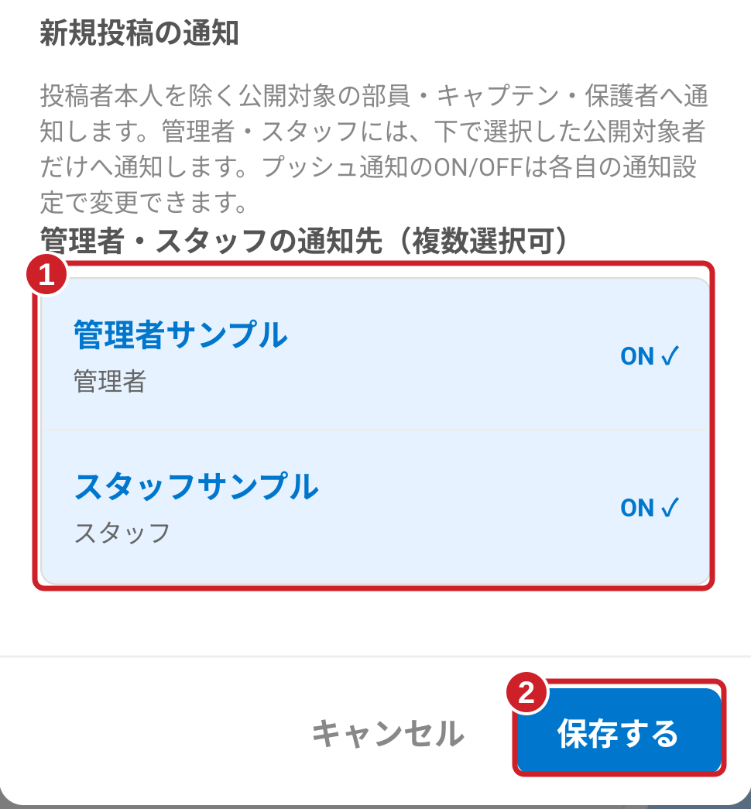
- 通知する管理者・スタッフを複数選択します。ここに部員・保護者の個別選択欄はありません。
- 共有範囲と通知先を確認して「保存する」を押します。実プッシュ配信の確認は別端末で行います。
04 / VIDEO SETUP
切り抜きの元になる動画を登録する
この画面では、動画ファイルを端末から選ぶのではなく、元動画のURLを登録します。初回は、参加者も再生できる練習用の動画URLを用意してください。
- 「動画編集（タグ付け）」を開きます
「動画」画面には「動画編集（タグ付け）」と「動画閲覧」の2つのタブがあります。元動画の登録とタグ記録は、編集側のタブで行います。
- 「新規追加」を押し、動画名・種類を入力します
「新しい動画を追加」で、動画名と「試合」「練習」「その他」のいずれかを選びます。
入力例
動画名：導入練習用・パス練習 / 種類：練習 - 共有範囲とタグリストを選びます
チームで見る練習には共有範囲「全体」を選びます。「指導者のみ」は監督・管理者・スタッフ向けの選択肢です。タグリストは、その映像で記録したい項目のまとまりを選びます。
- 「動画のURL（YouTubeなど）」へ貼り付けます
URL全体を貼り付けます。Androidには「貼り付け」ボタンがあります。iOSは入力欄を長押しして貼り付けます。元動画側の公開設定によっては、他の参加者が再生できないことがあります。
- 「作成する」を押し、追加された動画を開きます
一覧の「種類」「月」が閉じている場合は見出しを押して展開します。動画を開き、再生できることを確認します。
編集側の動画一覧に名前が表示され、元動画を再生できれば登録完了です。次に、その動画の中で「見返したい時点」をタグとして記録します。
実画面 / ANDROID
元動画の登録
Android開発版・練習用データ（2026年10月22日撮影）。赤枠と番号は押す場所の目印です。番号は各画像内で対応します。画像を押すと拡大できます。
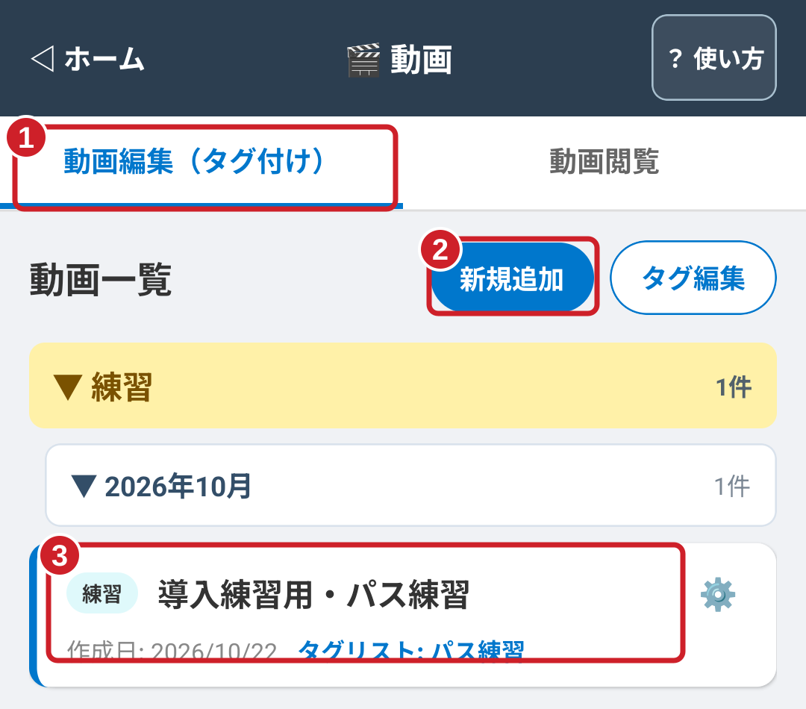
- 「動画編集（タグ付け）」を選びます。
- 「新規追加」で登録フォームを開きます。
- 登録済み動画を押すとタグ付け画面が開きます。
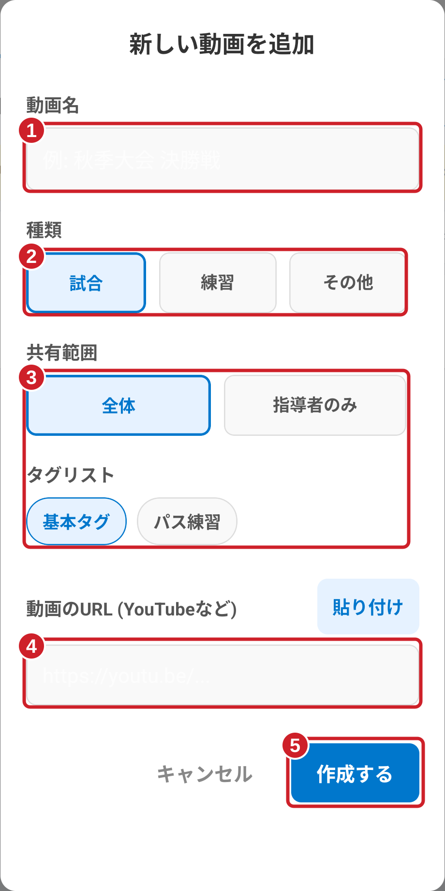
- 動画名を入力します。
- 試合・練習・その他から種類を選びます。
- 共有範囲と使用するタグリストを選びます。
- 参加者が再生できる元動画のURLを入力します。
- 「作成する」で登録します。
04 / RECORD A SCENE
タグを付けて場面を切り抜く
「タグ」は場面につける目印です。記録した時点の前後を指定して再生することで、見たいプレーだけを振り返れます。
- 元動画を再生し、残したい場面で止めます
プレーが起きた時点を基準にします。必要に応じて前後への移動で位置を調整します。
- 「全体切り抜き」の前・後の秒数を確認します
まずは前5秒・後3秒など、短い区間で試します。この動画の共通設定として使われ、画面を戻ると保存されます。
- 記録するタグを1つ以上選びます
画面に表示されたタグボタンを押します。複数選択もできます。選んだタグ名が、記録ボタンに表示されます。
- 「『選択したタグ名』で記録する」を押します
タグを選ぶだけでは記録されません。「タグを記録しました（未公開）」が表示され、記録一覧に増えたことを確認します。
- 記録一覧の「▶ 時刻」で、記録位置を確認します
その時点へ移動して再生します。前後の切り抜き区間は、この後の「動画閲覧」で確認します。個別の長さ調整と公開は次のページで説明します。
未公開のタグは、そのタグを記録した本人だけが見られます。他のメンバーに見てもらうには、公開操作が必要です。
このガイドの「切り抜き」は、元動画の時点と再生区間を記録する操作です。切り抜いた動画ファイルを端末へ保存する手順ではありません。
次は 公開と切り抜き時間の調整
実画面 / ANDROID
タグを選び、場面を記録する
Android開発版・練習用データ（2026年10月22日撮影）。赤枠と番号は押す場所の目印です。番号は各画像内で対応します。画像を押すと拡大できます。
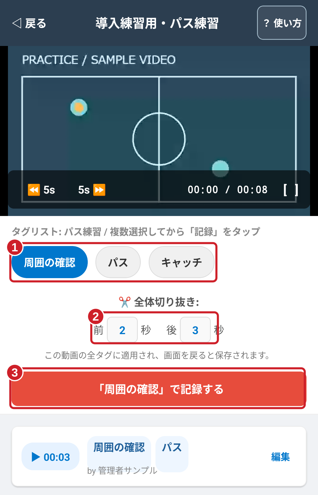
- 場面に合うタグを選びます。複数選択できます。
- 全タグ共通の前後秒数を設定します。
- 場面の位置で赤い「記録する」ボタンを押します。選ぶだけでは記録されません。
05 / VIEWING PROJECT
見返す動画をプロジェクトにまとめる
「動画閲覧」のプロジェクトは、見返す元動画をまとめる入れ物です。元動画を登録しただけでは、閲覧用プロジェクトは自動では作成されません。
- 「動画閲覧」タブを選びます
「プロジェクト一覧」が表示されます。登録済みのプロジェクトがある参加者は、新規作成せず、その名前を押して開けます。
- 「＋ 新規追加」を押します
「新しいプロジェクトを追加」が開きます。「プロジェクト名」には、見返す目的が分かる名前を入れます。
入力例
プロジェクト名：パス練習の振り返り - 「格納する動画」を選びます
種類・月の見出しを開き、対象動画にチェックを入れます。初回は1本で試します。過去の動画が見当たらない場合は「過去の動画を追加読み込み」を確認します。
- 「作成する」を押し、一覧から開きます
追加したプロジェクトを開き、公開済みのタグ場面が表示されるか確認します。次のページの方法で、場面を絞り込んで再生できます。
編集側の「動画」
元動画のURL・タグ・切り抜き時間を扱います。
閲覧側の「プロジェクト」
元動画を1本以上まとめ、タグで場面を探して再生します。
動画が格納されているか、タグを記録したか、そのタグを公開したかを順に確認します。閲覧する人が元動画の公開対象かも確認してください。
実画面 / ANDROID
閲覧用プロジェクトと動画選択
Android開発版・練習用データ（2026年10月22日撮影）。赤枠と番号は押す場所の目印です。番号は各画像内で対応します。画像を押すと拡大できます。
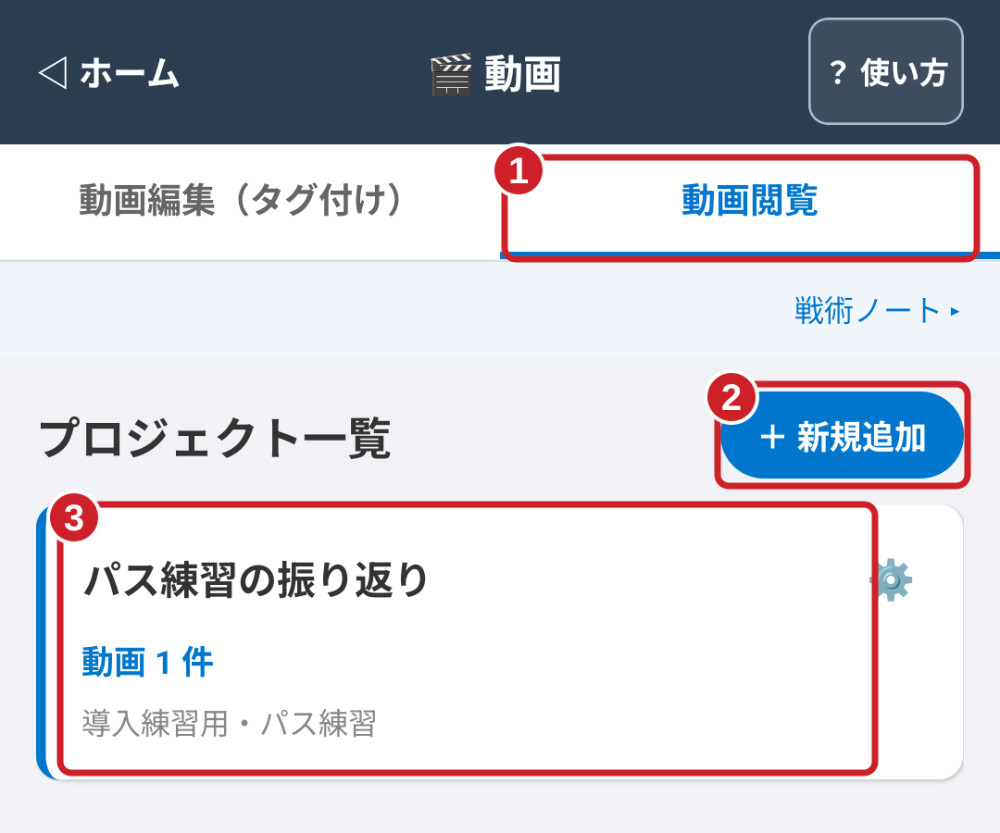
- 「動画閲覧」を選びます。
- 「＋ 新規追加」を押します。
- 作成済みならプロジェクト名を押して開きます。
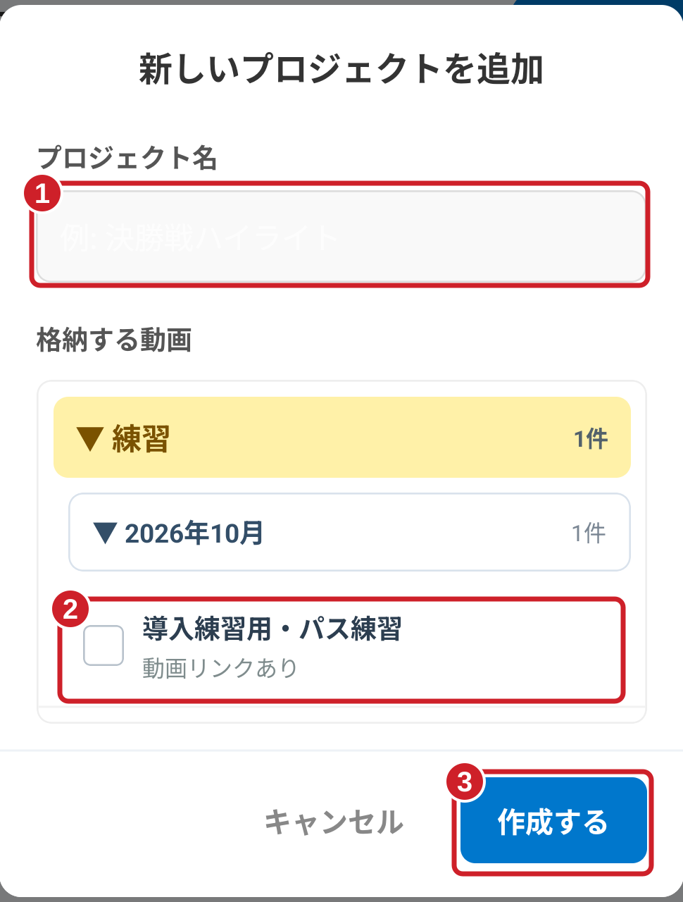
- プロジェクト名を入力します。
- 格納する元動画の左のチェックを選びます。
- 「作成する」で確定します。元動画の登録とは別の操作です。
05 / FIND & PLAY
見たい場面を探して再生する
- 指定されたプロジェクトを開きます
まずタグを絞らず、場面カードが表示されるか確認します。場面カードを押すと、その場面を再生します。
- 見たいタグを選びます
「検索条件」で「OR（いずれか）」か「AND（すべて）」を選び、タグを押します。初回はタグ1つから始めると、結果を理解しやすくなります。
- 場面を再生して、同じプレーを比較します
表示された場面を押して再生します。再生モードでは、1タグリピート・全体リピート・最後で終了を切り替えられます。画面の「再生モード」を確認します。
- 見つからない場合は条件を減らします
選択したタグを外す、ANDをORへ変える、格納動画を確認する、の順で試します。「条件に一致するシーンはありません」は、検索条件に合う場面がない状態です。
| 条件 | タグA・タグBを選んだとき |
|---|---|
| OR（いずれか） | AまたはBのどちらかが付いた場面。広く探すときに使います。 |
| AND（すべて） | 同じ場面にAとBの両方が付いたもの。条件を絞るときに使います。 |
戦術ノートを作成できる方は、「戦術ノート」を開いて場面を選択できます。動画閲覧側で「戦術ノート」を展開し、場面の左にチェックして「選択した○件でノートを作成」へ進む方法もあります。
次は 06 戦術ノートを作る
実画面 / ANDROID
タグ検索と場面の再生
Android開発版・練習用データ（2026年10月22日撮影）。赤枠と番号は押す場所の目印です。番号は各画像内で対応します。画像を押すと拡大できます。
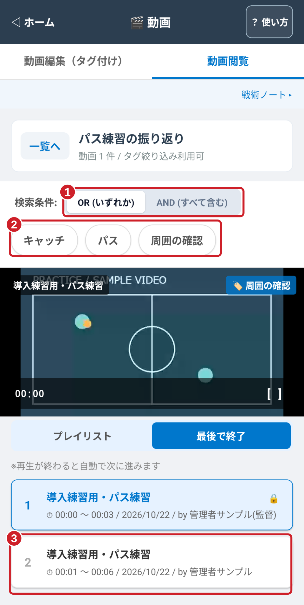
- OR／ANDの検索条件を選びます。
- 探したいタグを押します。
- 場面カードを押すと、その区間を再生します。練習用アニメーションを使っています。
06 / TACTICAL NOTES
動画の場面と伝えたいことをまとめる
先に「動画閲覧」のプロジェクトを作成し、対象動画を「格納する動画」に登録してください。「動画編集（タグ付け）」へ元動画を追加しただけでは、戦術ノートに場面を添付できません。未登録の方は、05 閲覧用プロジェクトの作成手順を先に行ってください。
- タイトルと「全体説明」を入力します
何を見て、次に何をするかが伝わる文章にします。初回は1つのテーマと1場面に絞ります。
入力例
タイトル：パスを受ける前の準備
全体説明：受ける前に周囲を確認しましょう。添付の場面で、確認するタイミングを見てください。 - 確認対象者を選びます
確認してほしい人を選びます。「全員」はキャプテン・一般部員を選択します。監督・管理者・スタッフは必要に応じて個別に選びます。指定なしでも投稿できますが、確認義務は設定されません。
- 「動画閲覧から場面を選ぶ」を押します
閲覧用プロジェクトを開き、再生して内容を確認します。場面カードを押す操作は「再生」、左のチェックは「添付する場面の選択」です。
- 「選択した○件を追加」を押します
ノートの作成画面に戻り、「添付場面」に選んだ場面があるか確認します。「場面ごとの指導コメント」も入力できます。場面を選べない場合は、元のタグの公開状態を確認します。
- 「投稿を保存」を押します
必要な場面または画像を添付して保存します。一覧に戻ってノートを開き、タイトル・本文・場面・確認対象者を確認します。
戦術ノートは、保護者以外のチーム全員に公開されます。確認対象者は、確認・理解・質問の反応を求める相手です。個人だけへ限定した内容を投稿する用途には使わないでください。
次は 画像や行動タスクを加える、または 読む側の操作へ。
実画面 / ANDROID
戦術ノートの入口と作成フォーム
Android開発版・練習用データ（2026年10月22日撮影）。赤枠と番号は押す場所の目印です。番号は各画像内で対応します。画像を押すと拡大できます。
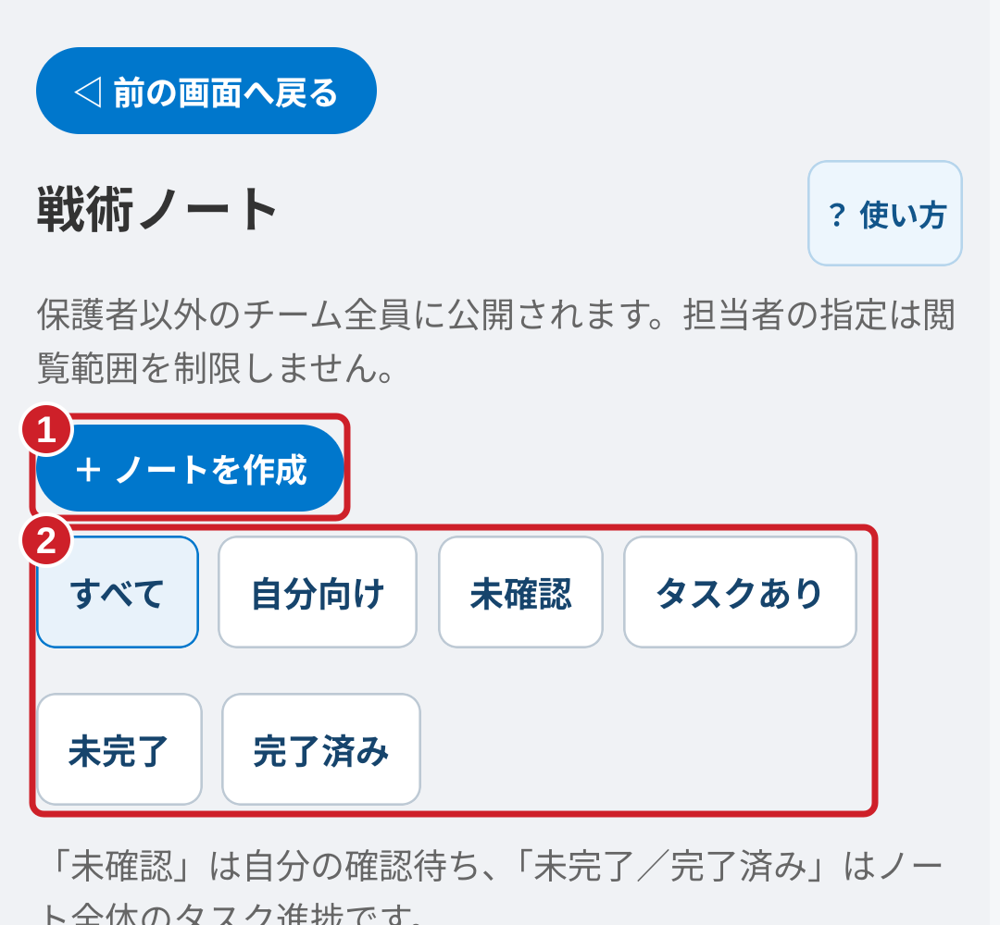
- 「＋ ノートを作成」で新規作成します。
- 「自分向け」「未確認」「タスクあり」などで一覧を絞り込めます。
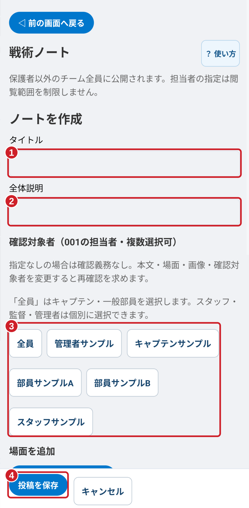
- タイトルを入力します。
- 全体説明を入力します。
- 確認対象者を選びます。閲覧範囲の制限ではありません。
- 場面や画像を添付し、内容を確認して「投稿を保存」で確定します。
06 / IMAGES & ACTIONS
画像・行動タスクで、次の行動を示す
基本のノート作成に慣れたら追加します。初回の講習では、動画場面を1つ添付したノートだけでも構いません。
図や写真で伝える
- 「画像を選ぶ」から指導画像を追加します
ノートの作成・編集画面の「指導画像」で選択します。画像は6枚までです。動画場面がなくても、画像が1枚以上あれば投稿できます。
- 不要な画像を外し、保存します
添付内容を確認し、不要なら「画像を取り外す」を押します。「投稿を保存」でノートを確定します。
「やってみること」を担当者へ伝える
- 「行動タスク（任意）」で「＋ タスクを追加」を押します
「実施内容」に、何をすれば完了かが分かる文章を入力します。例：「次の練習で、受ける前に周囲を確認する動きを3回試す」。
- そのタスクの担当者を選びます
ノート全体の「確認対象者」と、タスクの「担当者」は別の設定です。タスクごとに実施する人を選びます。タスク側の「全員」は、表示された対象メンバー全員を選択します。
- 「投稿を保存」を押し、担当者側で確認します
担当者がノートの「確認・質問・タスクを開く」へ進み、自分のタスクと「完了を報告」を確認できれば準備完了です。
本文・場面・画像・確認対象者を変更すると、その内容への再確認を求めます。タスク内容・担当者を変更した場合は、そのタスクの完了報告が再度必要になります。
ノートは動画場面100件まで、画像6枚まで、行動タスク30件までです。最初の運用は少ない数で始めてください。
次は 確認・質問・完了報告
実画面 / ANDROID
場面を選んで、コメントやタスクを加える
Android開発版・練習用データ（2026年10月22日撮影）。赤枠と番号は押す場所の目印です。番号は各画像内で対応します。画像を押すと拡大できます。
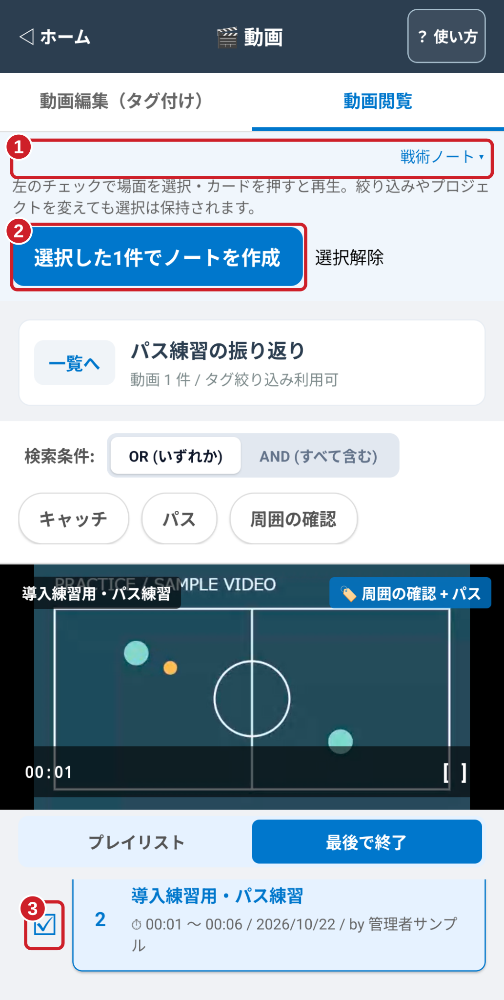
- 「戦術ノート」を展開します。
- 選択件数を確認して「選択した○件でノートを作成」を押します。ノートから選びに来た場合は「選択した○件を追加」です。
- 左のチェックは添付用、場面カードは再生用です。公開済みの場面を選びます。
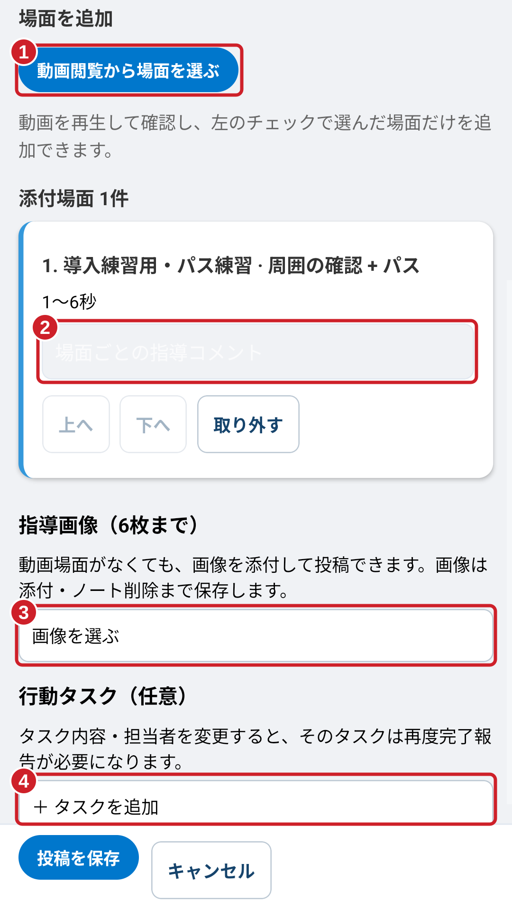
- 「動画閲覧から場面を選ぶ」で場面を追加します。
- 場面ごとの指導コメントを入力できます。
- 図や写真を添付する場合は「画像を選ぶ」を押します。
- 「＋ タスクを追加」で実施内容と担当者を設定します。
06 / READ & RESPOND
ノートを読み、確認・質問を返す
- 自分に向けられたノートを開きます
一覧の「自分向け」「未確認」で探せます。月の見出しが閉じている場合は押して開きます。まず本文を読み、添付の動画場面を再生します。
- 確認・質問の画面を開きます
「確認・質問・タスクを開く」を押します。画像がある場合は、ボタン名に画像の枚数も表示されます。画像だけのノートは、開くと確認画面が表示されます。
- 自分の反応を登録します
確認対象者には「確認しました」「理解しました」が表示されます。質問がある場合は「質問本文」を入力し、「質問があります：送信」を押します。ノートを開くだけでは確認登録にはなりません。
- 返信を読み、解決したら登録します
「質問を表示」「返信を表示」から確認します。ノートを管理できる方は「返信を保存」で返答します。質問した本人が、解決後に「この質問は解決しました」を押します。
- タスクを実施したら「完了を報告」を押します
自分が担当する行動タスクで操作します。必要に応じて完了コメントを入力します。管理する方は、完了報告を理由付きで差し戻すこともできます。
「未確認」は、自分に求められているノートの確認待ちです。「未完了／完了済み」は、ノート全体のタスク進捗です。ノートを確認しても、タスクを実施するまでは完了報告を行いません。
ノートの編集・削除は、監督・管理者または作成者が行えます。スタッフ・キャプテンでも、他の人が作成したノートを一律に編集できるわけではありません。
実画面 / ANDROID
ノートの動画場面を確認する
Android開発版・練習用データ（2026年10月22日撮影）。赤枠と番号は押す場所の目印です。番号は各画像内で対応します。画像を押すと拡大できます。
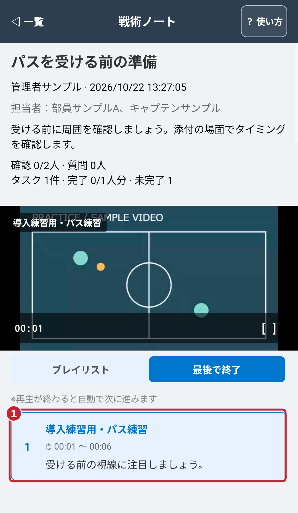
- 場面カードを押して、コメントと動画を確認します。確認・質問・完了報告は本文の手順で別に登録します。
Q&A / ACCOUNT & MEMBERS
困ったとき：参加・役割
質問を押すと回答を開けます。PDFでは回答をすべて掲載しています。
全32件の質問を表示しています。
Q01 招待コードを入れても参加できません。
Q02 確認メールが届きません。
Q03 メールのリンクを開いたのに、確認画面のままです。
Q04 「このメールアドレスは既に登録されています」と出ます。
Q05 スタッフ・保護者は、どこから登録しますか。
Q06 説明にあるボタンが見つかりません。
Q07 動画追加だけ任せたい場合も、スタッフに変更しますか。
Q08 学年・グループに候補がありません。
Q&A / CALENDAR & COMMUNICATION
困ったとき：予定・全体連絡・通知
Q09 カレンダーの共有予定に「＋ 追加」がありません。
Q10 保存した予定が、他の人には見えません。
Q11 先の日程を登録しましたが、通知が届きません。
Q12 全体連絡の設定はどこですか。
Q13 保護者に全体連絡が表示されません。
Q14 全体連絡を読めますが、投稿できません。
Q15 投稿は見えますが、通知が届きません。
Q16 通知をOFFにしたら、ベルの一覧や件数も消えました。
Q&A / VIDEO
困ったとき：動画・切り抜き・閲覧
Q17 動画の「新規追加」が表示されません。
Q18 動画を登録しましたが、再生できません。
Q19 タグを選びましたが、場面が増えません。
Q20 自分には見えますが、他の人に切り抜きが見えません。
Q21 元動画を追加したのに、動画閲覧の一覧が空です。
Q22 「条件に一致するシーンはありません」と出ます。
Q23 切り抜きが短すぎます／全体の秒数変更が反映されません。
Q24 切り抜いた動画ファイルは、端末のどこに保存されますか。
Q&A / TACTICAL NOTES
困ったとき：戦術ノート
Q25 戦術ノートが見えません／作成ボタンがありません。
Q26 確認対象者に指定した人だけがノートを見られますか。
Q27 場面を再生しましたが、ノートに添付されません。
Q28 タイトルと説明を入れても、保存できません。
Q29 確認対象者の「全員」にスタッフが含まれていません。
Q30 確認したノートが、また未確認になりました。
Q31 スタッフですが、他の人のノートを編集できません。
Q32 ノートに付いていた場面が再生できなくなりました。
PRACTICE TOGETHER
講習用：一緒に操作する4つの課題
管理側と参加者側の2つのアカウントを使い、各課題で相手側の画面を確認します。全体で30〜45分を目安に、動画は準備済みの短い映像を使います。
| 課題・目安 | 実際に行うこと | 完了の確認 |
|---|---|---|
| 1 参加と役割 約10分 | 管理側がコードを共有。参加者が登録・メール確認。管理側が役割と必要な権限を設定します。 | 参加者が同じチームのホームを開ける。01へ |
| 2 予定 約5分 | 練習予定を1件登録。参加者が同じ日付を開き、時間と持ち物を読みます。 | 参加者が日時・集合場所を説明できる。02へ |
| 3 連絡と通知 約5〜10分 | 共有範囲・通知先を設定。参加者も通知をONにし、管理側がテスト投稿します。 | 投稿者以外が通知から連絡を開ける。03へ |
| 4 動画とノート 約10〜20分 | タグを1件記録・公開。閲覧用プロジェクトで再生し、ノートに添付。参加者が確認を返します。 | 場面を再生でき、確認状態が変わる。04〜06へ |
講師の説明で使える言葉
「共有範囲は、この連絡を読める人です。通知先は、管理側の誰に新着を知らせるかです。最後に、受け取る人が自分の通知設定を確認します。」
「動画にタグを付けて、見てほしい場面に目印を残します。公開してからノートに添え、見るポイントを書きます。見る人は、確認や質問で反応を返します。」
講習の最後に参加者へ確認すること
- 自分だけで、共有予定と全体連絡を開ける。
- 通知が来ないときに確認する設定を見つけられる。
- 指定された動画場面を再生できる。
- 対象者は、ノートの確認・質問の画面を開ける。
例文・練習用の予定や動画名は説明用です。既存の運用内容と混同しない名前を付け、練習後の整理はチーム内で担当者を決めて行ってください。
REFERENCE
用語と、困ったときの伝え方
| 言葉 | 意味 |
|---|---|
| ホーム | チーム名と連絡タブが表示される、チームの基本画面。 |
| 役割／個別権限 | 監督・スタッフ・部員などの立場／その人に追加で許可する操作。 |
| 連絡タブ／チャンネル | 「全体連絡」など、テーマや対象ごとに投稿をまとめる場所。 |
| 共有範囲／公開範囲 | その情報を閲覧できる人の範囲。 |
| 通知先 | 連絡タブの新規投稿を知らせる管理者・スタッフの指定。 |
| タグ／切り抜き | 動画の時点に付ける目印／その時点の前後を再生する区間。 |
| 閲覧用プロジェクト | 「動画閲覧」で元動画をまとめ、タグ場面を探して再生する入れ物。 |
| 確認対象者／タスク担当者 | ノートへの確認を求める人／行動タスクを実施する人。 |
管理者へ相談するとき
「どのチーム」「自分の役割」「どの画面」「何を押したか」「何が起きたか」を伝えると確認しやすくなります。
自分の役割は一般部員です。「動画」→「動画編集（タグ付け）」を開きましたが、「新規追加」がありません。動画追加の許可があるか確認をお願いします。
アプリのサポートへ相談するとき
設定の「法務・サポート」→「Webお問い合わせ」、またはSharpRiseのお問い合わせページを利用できます。端末のOS、アプリのバージョン、操作した日時、表示されたエラーを添えると状況を伝えやすくなります。パスワードや他の人の個人情報は送らないでください。
本文は現行ソースと照合し、2026年10月22日にAndroid開発版の実画面を追加しました。掲載データ・人物名・動画は練習用です。画像は操作箇所に合わせて表示範囲を切り出し、番号・赤枠を重ねています。端末・役割・設定・アプリの版により表示は異なります。実際の通知受信とiOS・配布版の表示は、利用する端末で確認してください。